Sistem Perlindungan Aktif
Sistem perlindungan aktif merujuk kepada sistem perlindungan kebakaran yang dipasang tetap pada sesuatu bangunan yang memerlukan pengaktifan (sama ada manual atau automatik) untuk berfungsi. Ia direka untuk bertindak balas terhadap kebakaran dan memerlukan penyelenggaraan berterusan untuk memastikan keberkesanannya.
Empat Cara Bertindak Sistem Aktif:
- Mengesan - Mengenalpasti tanda-tanda awal kebakaran (contoh: asap, haba, api).
- Memberi Isyarat - Memberi amaran kepada penghuni dan/atau pihak berkuasa tentang kebakaran.
- Mengawal - Mengurangkan atau menghadkan penyebaran api dan asap.
- Memadam Kebakaran - Secara langsung memadam api. Tindakan ini boleh berlaku secara manual (perlu diaktifkan oleh manusia) atau automatik (diaktifkan oleh sensor atau sistem).
Syarat/Peraturan Pemasangan:
- Penentuan pemasangan sistem berdasarkan pada sesuatu rekabentuk bangunan
Jenis dan skop sistem aktif yang diperlukan ditentukan oleh ciri-ciri dan kerumitan reka bentuk bangunan (contoh: ketinggian, keluasan, fungsi, bilangan penghuni). - Menentukan penempatan sistem
Lokasi pemasangan komponen sistem (contoh: kepala pemercik di siling, pengesan di tembok luar, panel kawalan di lobi). - Pemasangan mematuhi syarat-syarat yang ditetapkan
Pemasangan mesti mengikut piawaian industri dan peraturan yang ketat seperti:- MS (Malaysian Standards): Piawaian kebangsaan Malaysia.
- NFPA (National Fire Protection Association): Piawaian antarabangsa yang diiktiraf luas.
- Arahan Jabatan Bomba: Garis panduan dan keperluan khusus oleh Jabatan Bomba dan Penyelamat Malaysia.
- Lain-lain standard yang berkaitan: Piawaian lain yang mungkin relevan mengikut jenis sistem atau bangunan.
- Pemasangan sistem mekanikal yang dikhaskan
Merujuk kepada sistem yang melibatkan komponen mekanikal seperti pam, paip, injap, dan kipas, yang perlu dipasang oleh kontraktor yang berkelayakan. - Menentukan pengawasan dan penyelenggaraan sistem
Sistem aktif memerlukan pengawasan berterusan dan jadual penyelenggaraan yang ketat (ujian berkala, servis) untuk memastikan ia berfungsi dengan baik apabila diperlukan.
Sistem perlindungan aktif terbahagi kepada tiga jenis iaitu sistem pemadaman manual, sistem pemadaman automatik dan sistem memberi amaran.
Sistem Pemadaman Manual
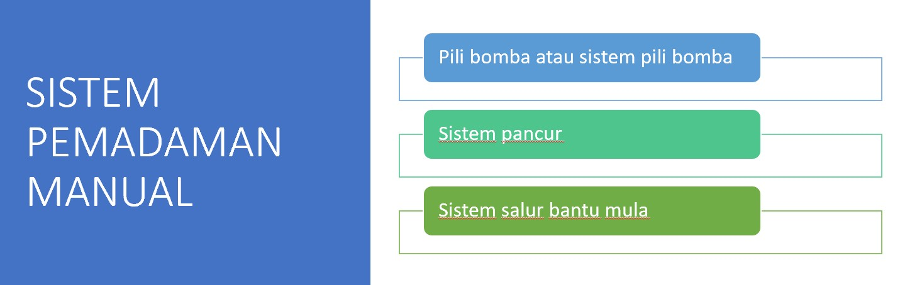Pili Bomba
Dalam konteks Undang-Undang Kecil Bangunan Seragam (UBBL) 1984 Pindaan 2021 dan arahan Jabatan Bomba dan Penyelamat Malaysia (JBPM), istilah "Pili Bomba" merujuk kepada sambungan air luaran yang digunakan oleh pihak bomba. Istilah "Pili Bomba Biasa" biasanya merujuk kepada pili awam, manakala "Pili Bomba Bertekanan" merujuk kepada pili yang disambungkan kepada sistem perpaipan tekanan tinggi.
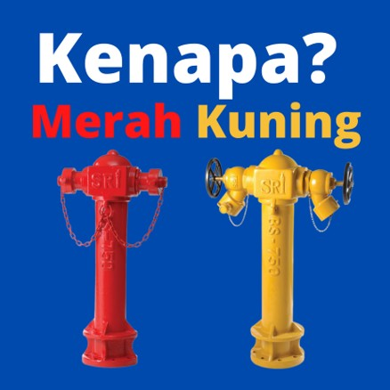Secara umumnya pili bomba terbahagi kepada dua iaitu pili bomba awam dan pili bomba swasta. Salah satu kaedah menentukan jenis pili bomba ini ialah melalui warna pili bomba tersebut. Pili bomba awam (biasanya berwarna merah) dipasang untuk memudahkan operasi memadam kebakaran sekiranya berlaku di tempat-tempat awam, perumahan awam dan di tempat lain yang berkaitan dengan orang awam. Pili bomba ini tidak mempunyai meter dan ia juga tidak dimiliki oleh mana-mana premis persendirian seperti yang terdapat di bahu jalan.
Manakala pili bomba swasta (biasanya berwarna kuning) dipasang di premis persendirian seperti di kilang, wisma ataupun syarikat swasta. Pili bomba swasta ini mempunyai meter dan ia digunakan untuk menyediakan bekalan air sekiranya berlaku kebakaran di premis persendirian yang terlibat.. Pili bomba awam disediakan untuk memadam kebakaran di kawasan awam, manakala pili bomba swasta memberikan bekalan air yang tersuai kepada premis swasta.
Ciri-ciri Utama Pili Bomba Awam
- Tujuan: Menyediakan bekalan air yang mudah diakses dan berterusan kepada pihak bomba untuk operasi memadam kebakaran.
- Bekalan Air: Disambungkan terus ke paip retikulasi utama awam.
- Tekanan: Tekanan air bergantung kepada tekanan dalam sistem paip air awam. Ia sering kali tidak mempunyai tekanan yang konsisten dan mencukupi untuk pertempuran api yang besar. Oleh itu, pihak bomba biasanya akan menggunakan pili ini untuk mengisi semula tangki air jentera mereka atau menyambungkannya ke pam jentera mereka untuk meningkatkan tekanan.
- Penempatan (UBBL):
- UUK 236: Menghendaki kemudahan pili bomba yang mencukupi disediakan dalam had lot bangunan atau dalam jarak yang mudah dicapai oleh JBPM.
Piawaian Pemasangan:
- MS 1395 (Hydrants Systems): Piawaian ini merangkumi reka bentuk dan pemasangan sistem pili.
- Spesifikasi: Pili Bomba mesti mematuhi spesifikasi teknikal JBPM termasuk jenis sambungan (couplings) dan kadar alir minimum.
Terdapat beberapa bentuk pili bomba yang biasa kita jumpa iaitu jenis bertiang (pillar), 2 way pillar fire hydrant dan 3 way pillar fire hydrant.
 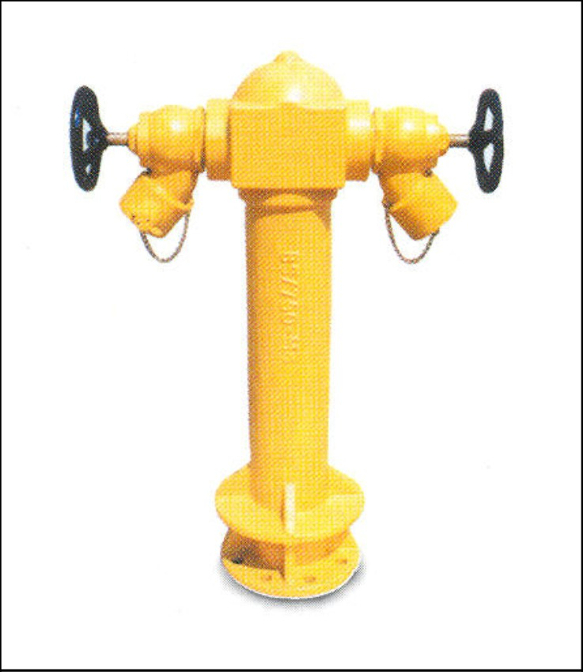
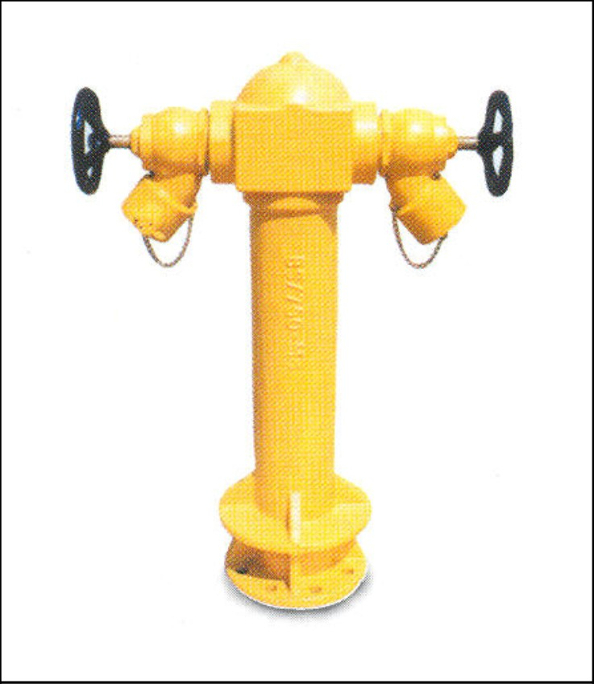
 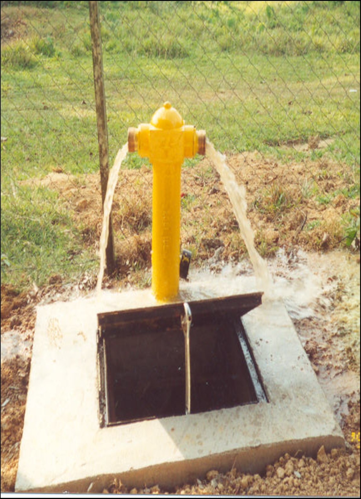
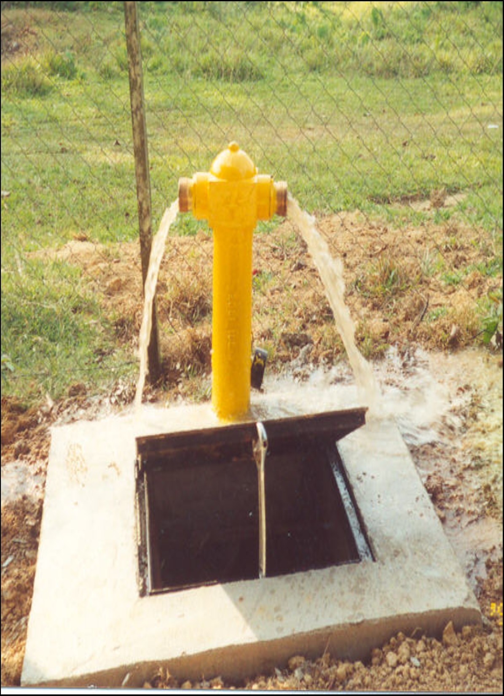
Lukisan skematik di bawah menunjukkan perbezaan di antara pili bomba biasa dan pili bomba bertekanan. Kadar pengeluaran air bagi pili bomba biasa ialah 1000 liter seminit manakala kadar pengeluaran air bagi pili bomba bertekanan ialah 1500 liter seminit.
"Tiap-tiap bangunan hendaklah dilengkapkan dengan sekurang-kurangnya satu pili bomba ditempatkan tidak lebih daripada 30 meter daripada suatu kemasukan ke mana-mana bangunan atau salur masuk dan direka bentuk dan dipasang mengikut PM 1489, dan dalam sesuatu hal, pili bomba hendaklah ditempatkan tidak lebih daripada 90 meter jauhnya."
- Piawaian Jarak Minimum: Sekurang-kurangnya satu pili bomba mesti ditempatkan dalam jarak 30 meter dari mana-mana akses utama ke bangunan (atau dari salur masuk siam bomba - fire fighting inlet).
- Piawaian Jarak Maksimum: Pili bomba sedia ada yang bersebelahan antara satu sama lain tidak boleh diletakkan lebih daripada 90 meter jauhnya. Ini memastikan liputan yang mencukupi untuk kawasan perbandaran.
- Piawaian Reka Bentuk (PM 1489): Pili bomba mesti direka bentuk dan dipasang mengikut Piawaian Malaysia (PM) 1489 (yang menggariskan keperluan teknikal untuk sistem hos dan pili bomba).
- Tujuan: Untuk memastikan perkakas bomba (jentera bomba) dapat mengakses sumber air yang mencukupi dengan pantas sebaik sahaja tiba di tapak kebakaran.
Jika kita merujuk kepada kehendak-kebombaan berkaitan dengan pili bomba, semua keperluan di bawah perlu dipatuhi:
- Kedudukan Pili Bomba pertama hendaklah ditempatkan tidak lebih daripada 45 meter daripada pintu masuk ke Akses Perkakas Bomba atau pili bomba sedia ada.
- Mengadakan Pili Bomba jenis pengeluaran dua hala dan jarak di antara pili-pili bomba hendaklah tidak lebih daripada 90 meter.
- Mengadakan Pili Bomba jenis berikut:-
- Pili Bomba dengan pengeluaran air sebanyak 1,000 liter seminit bagi setiap pili bomba dan dipasang mengikut MS 1489.
- Sistem Pili Bomba Bertekanan dengan pengeluaran air sebanyak 1,500 liter seminit bagi setiap pili bomba dan 3,000/4,500 liter/minit apabila 2/3 buah pili bomba dibuka serentak. Pemasangannya mengikut MS1489
- Mengadakan 2 gelung hos berukuran 64mm x 30 meter dan satu unit nozel yang ditempatkan di dalam peti kabinet berhampiran dengan tiap-tiap pili bomba kecuali bagi Kumpulan Maksud I, Jadual Kelima.
- Kedudukan Pili Bomba dengan injap masuk (breeching inlet) PKK hendaklah tidak melebihi 30 meter.
- Pili bomba sediada hendaklah dalam keadaan baik dan berfungsi serta ditandakan di dalam pelan.
Sistem Pancur Kering
Sistem pancur terbahagi kepada dua iaitu sistem pancur kering dan sistem pancur basah. Keperluan mengadakan sistem pancur kering terletak di bawah UUK 230. Suatu sistem pancur kering hendaklah disediakan dalam tiap-tiap bangunan yang tingkat paling atas yang diduduki adalah melebihi daripada 18 meter tetapi kurang daripada 30 meter di atas paras akses perkakas bomba
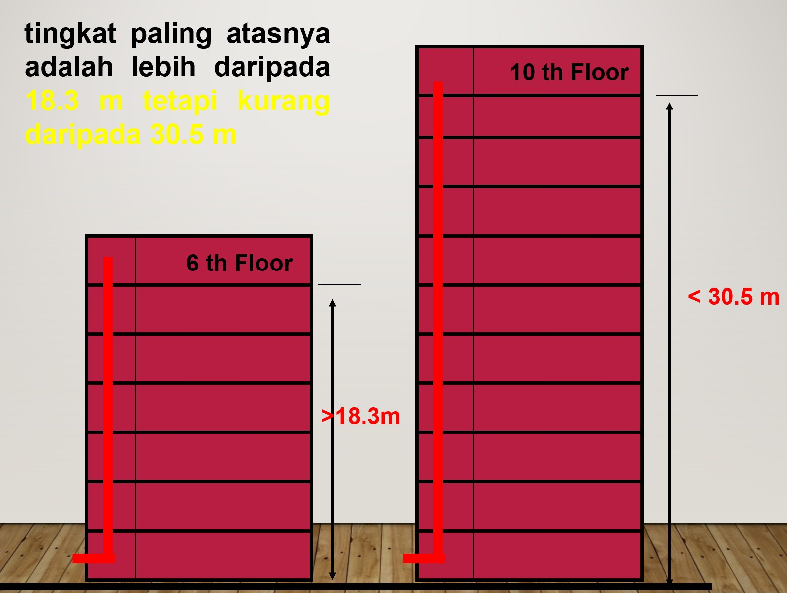Sistem pancur kering diperlukan di bangunan yang sederhana tinggi. Di bawah 18 meter, jentera bomba biasanya masih boleh menggunakan hos terus dari tanah. Di atas 30 meter, sistem Pancur Basah (Wet Riser) yang lebih berkuasa (yang mempunyai bekalan air dan pam sendiri).
Tujuan sistem pancur kering diadakan adalah untuk memberi kemudahan kepada anggota bomba untuk memadam kebakaran di dalam bangunan. Ianya merupakan pili bomba menegak di dalam bangunan.
Reka bentuk dan pemasangan sistem ini mesti mematuhi Piawaian Malaysia (PM) 1489 (yang merangkumi sistem pili bomba dan gelung hos). Suatu sambungan hos hendaklah disediakan dalam setiap ruang akses menentang kebakaran atau berhampiran suatu tangga menentang kebakaran di tiap-tiap lantai. Tujuannya adalah untuk memastikan anggota bomba dapat menyambungkan hos mereka kepada injap air di tingkat yang terbakar dari tempat yang selamat dan terlindung daripada api/asap.
Sistem pancur kering ialah alat penting untuk pemadaman api menegak. Ia membolehkan bomba memintas keperluan untuk membawa hos yang panjang dan berat dari tingkat bawah ke tingkat yang terbakar, menjimatkan masa kritikal semasa operasi menyelamat.
Antara sebab lain ia digelar sistem pancur kering adalah kerana ia merupakan sistem paip yang tidak mempunyai air di dalamnya. Sumber air begantung kepada jentera bomba yang disalurkan melalui injap alir masuk (breeching inlet) pada sistem ini.
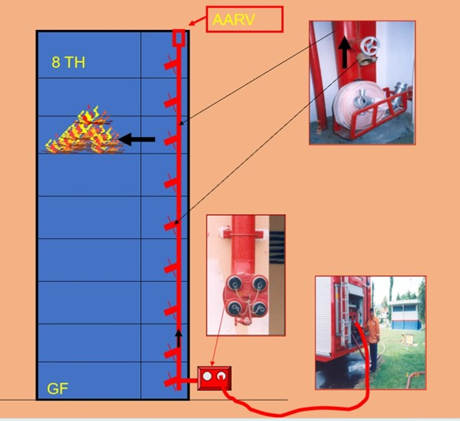Lokasi injap alir masuk hendaklah berhampiran dengan akses bomba iaitu pada jarak yang tidak melebihi 18 meter, tidak terhalang dan mudah dilihat dari jalan. Jarak injap alir masuk dengan pili bomba tidak lebih dari 30 meter.
 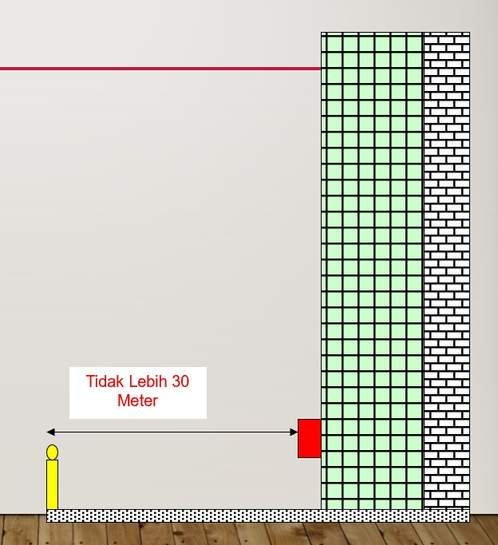
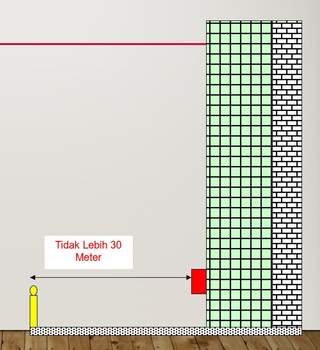
Antara syarat lain injap alir masuk ini ialah:
- Dipasang pada dinding luar bangunan
- Paling hampir dengan pancur menegaknya
- Larian mendatar condong ke arah injap masuk
- Boleh dilihat dari akses bomba
- Hendaklah berhampiran pili bomba
- Terhindar dari kejatuhan kaca tingkap bangunan semasa kebakaran
- Akses tidak terhalang oleh apa-apa hal keadaan semasa kebakaran
Bagi syarat paip sistem pancur kering ini pula ialah :
- Terletak di dalam ruang akses menentang kebakaran
- Coverage area ialah 900 meter persegi atau 45 meter
- Jarak antara riser tidak boleh lebih 60 meter
Sistem Pancur Basah
Sistem pancur basah merupakan salah satu keperluan di dalam ruang akses menentang kebakaran. Ia merupakan sesalur yang direkabentuk dan dipasang menegak dalam sesuatu bangunan, yang mengandungi air bertekanan untuk menentang dan melawan kebakaran dalam sesebuah bangunan.

Merujuk UUK 231, suatu sistem pancur basah hendaklah disediakan dalam tiap-tiap bangunan yang mana tingkat paling tinggi yang diduduki adalah melebihi 30 meter di atas paras akses perkakas bomba.
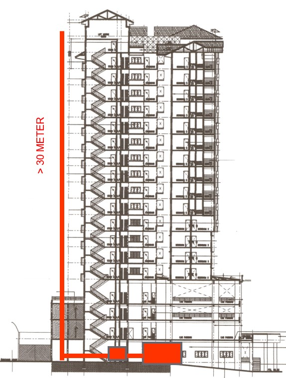Bagi bangunan yang sedang dibina, perlu mengadakan sekurang-kurangnya satu sistem pancur basah apabila mencapai ketinggian 30 meter. Pancur hendaklah dilanjutkan mengikut kemajuan binaan hingga ke takat dua tingkat daripada tingkat yang paling tinggi yang sedang dibina. Sistem pancur basah hendaklah dilanjutkan ke tingkat besmen jika kedalaman besmen melebihi 9 meter dari aras tanah.
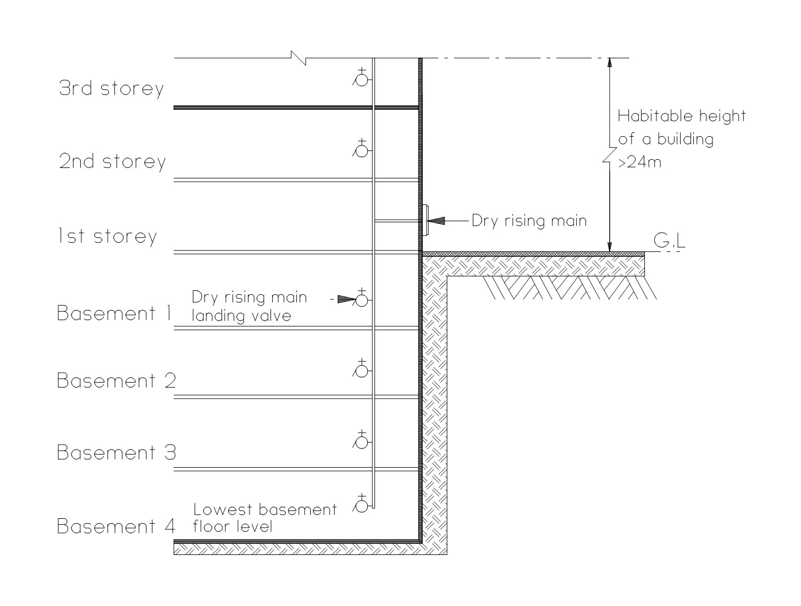Jarak dan coverage sistem pancur basah adalah sama seperti seperti sistem pancur kering juga.
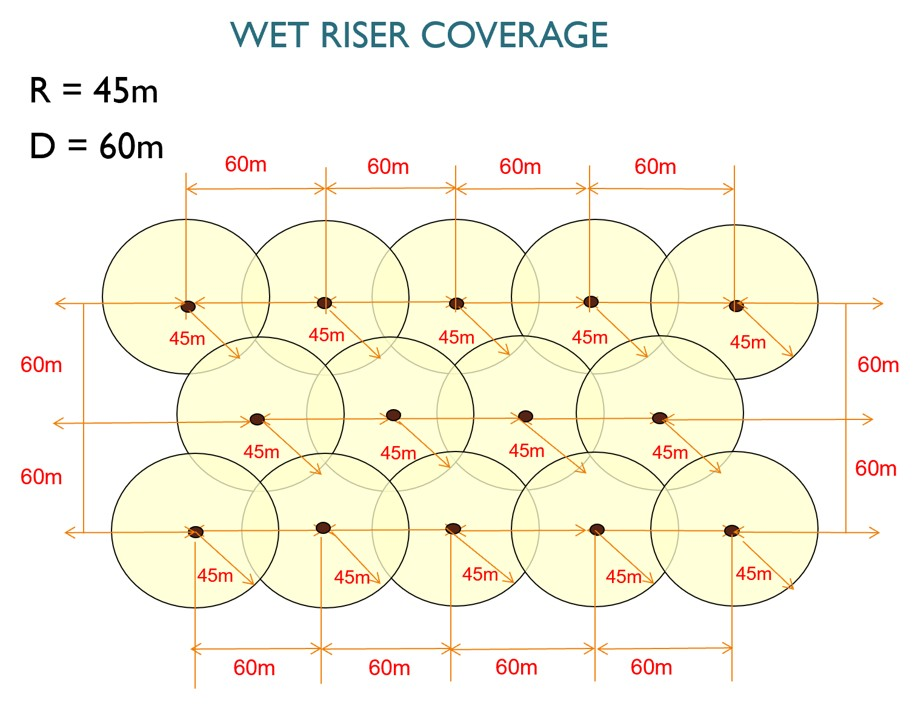Komponen sistem pancur basah terdiri daripada injap alir masuk, tangki bekalan air, set pam, pump starter panel, sistem paip, injap pelantar, suis dan tolok tekanan.
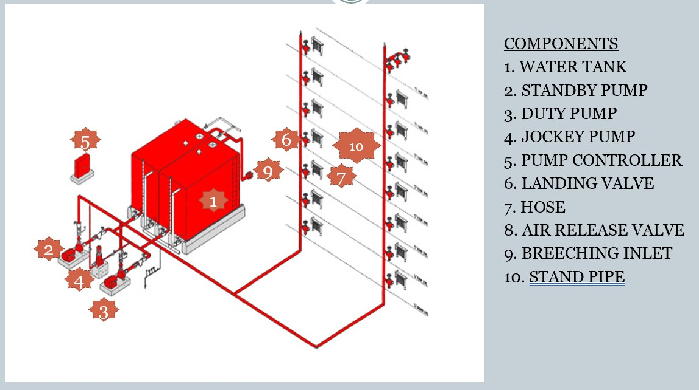Injap Alir Masuk
- Injap alir masuk hendaklah 4 hala dan digunakan untuk menyalurkan air dari pam bomba ke tangki sistem pancur basah.
Injap ini hendaklah ditempatkan dalam kotak dengan ditandakan dengan ’Injap Pancur Basah’. Kotak ini hendaklah di cat merah.
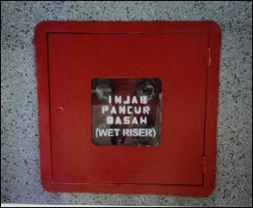Lokasi injap alir masuk hendaklah berhampiran dengan akses bomba iaitu pada jarak tidak melebihi 18 meter. Pastikan ia tidak terhalang dan mudah dilihat dari jalan.
Jarak injap alir masuk dengan pili bomba tidak boleh lebih dari 30 meter.
Ketinggian injap alir masuk tidak melebihi 750mm dan paip sambungan antara injap masuk dengan paip menegak hendaklah seberapa pendek yang boleh.
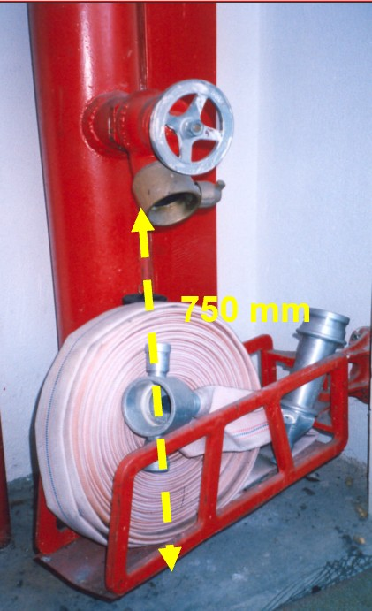Tangki Bekalan Air
- Muatan tangki utama ialah 45,500 liter dan tangki pemecah ialah 11,375 liter.
- Jenis tangki ialah ‘reinforced concrete’, ‘fibre reinforced polyester’, ‘press steel’ atau yang diluluskan oleh JBPM.
- Lokasi tangka hendaklah diletak sama ada di lantai aras tanah, besmen 1 atau besmen 2 sahaja.
- Tangki dilengkapkan dengan penanda aras air, paip limpah, paip buangan dan ’ball float valve’.
- Tangki hendaklah diletakkan di atas tapak ’plinth’.
- Tangki hendaklah dicat dengan warna merah atau satu garisan merah setinggi 200 mm di bahagian permukaan luar tangki.
- Tangki hendaklah dilabelkan dengan perkataan Tangki Sistem Pancur Basah.
- Tangki hendaklah dikompatmen bagi memudahkan kerja penyelenggaraan supaya ianya tidak menjejaskan bekalan air pada sistem.
- Tangki sistem pancur basah hendaklah diasingkan dengan tangki bekalan air lain-lain sistem
 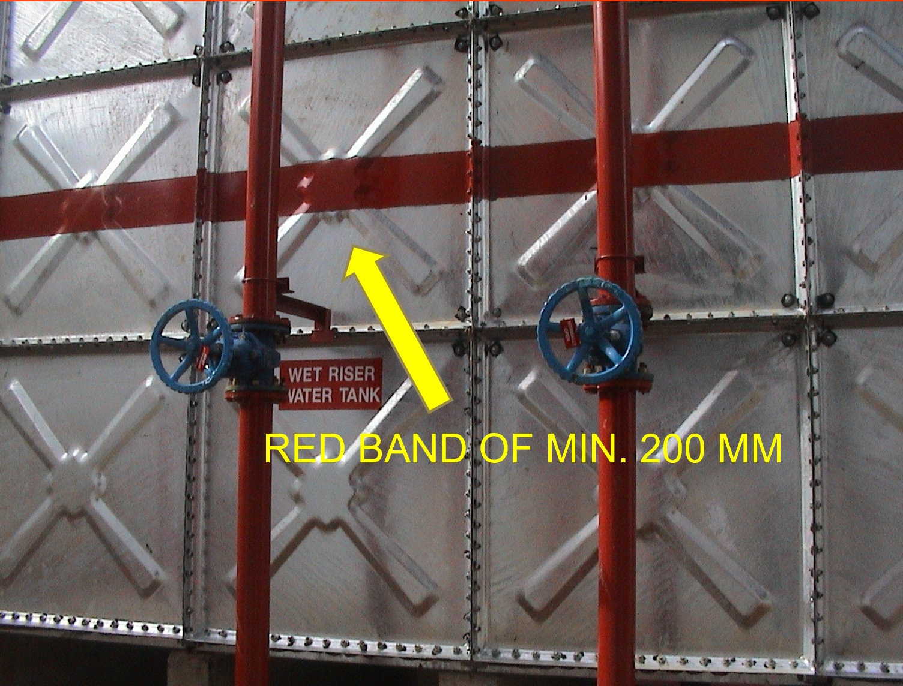
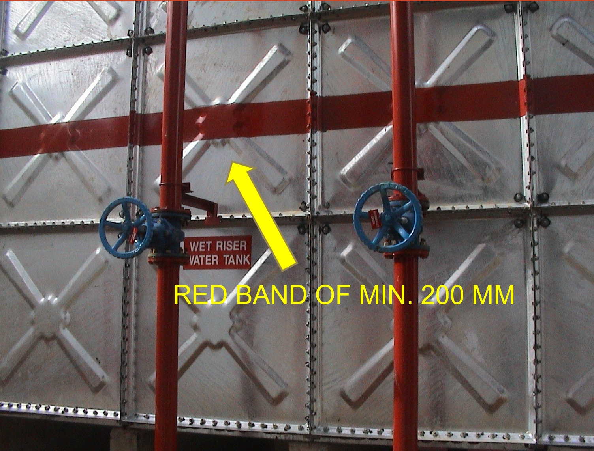
Pam
-
Pam sistem basah mempunyai set yang terdiri daripada:
-
Jockey pump
- Berfungsi mengimbangi tekanan air dalam paip
- Boleh bertindak secara manual dan automatik dengan menggunakan kuasa elektrik
-
Duty pump
- Berfungsi untuk memberi tekanan dan pengeluaran air semasa melawan kebakaran
- Berfungsi secara automatik dan manual dengan menggunakan kuasa elektrik
- Kuasa pam bergantung kepada pengeluaran dan ketinggian bangunan. Walaubagaimanapun, boleh memberi tekanan di hujung nozel tidak kurang daripada 4 hingga 7 bar denagn bukaan tida landing valve secara serentak
-
Standby pump
- Berfungsi sama seperti ‘duty pump’ tetapi hanya akan berfungsi apabila ’duty pump’ rosak atau bekalan kuasa terputus
- Boleh digerak dengan diesel atau elektrik jika bangunan tersebut mempunyai generator
- Kuasa pam hendaklah tidak boleh melebihi kuasa ’duty pump’
- Boleh berfungsi secara manual dan automatik. Sekiranya enjin diesel, perlu dimatikan secara manual
- Kapasiti diesel hendaklah mampu menggerakkan pam tidak kurang 2 jam
- Ekzos paip hendaklah dibalut dengan bahan penebat
-
Jockey pump
- Set pam ini hendaklah dilindungi daripada bahaya kebakaran dan keadaan banjir
- Pendawaian elektrik bagi pam hendaklah dari kable jenis penebat minral tahan api atau di dalam konduit logam.
Suis Tekanan
- Berfungsi untuk memberi isyarat kepada ’pump starter panel’ untuk menggerakkan pam
- Setiap pam dikawal oleh satu suis tekanan
- Setiap pam ’cut in’ Adalah untuk gerakkan pam pada tekanan tertentu iaitu:
- Jockey Pump – berfungsi pada 90% dan berhenti pada 110%
- Duty Pump – 80% daripada tekanan dalam sistem
- Standby Pump – 60% daripada tekanan dalam sistem
- Set pam ’cut out’ Adalah untuk hentikan pam pada tekanan tertentu
- Setting pam Adalah bergantung pada performance sesuatu pam
- Setiap suis tekanan mesti ditempatkan di lokasi yang jelas
- Hendaklah ditandakan ’cut in’ dan ’cut out’ pada setiap suis tekanan
Tolok Tekanan
- Untuk menyukat tekanan air di dalam paip
- Mengesan tekanan air yang mengalir dalam paip seterusnya memberi isyarat kepada suis tekanan untuk menghidupkan pam dan sebaliknya
- Tekanan dibaca pada sukatan bar atau p.s.i.
Pump Starter Panel
- Berfungsi sebagai penggerak kepada ketiga-tiga pam
- Mempunyai butang tekan untuk gerakkan dan mematikan pam
- Terdapat beberapa petunjuk seperti ’fault’, ’battery fail’, ‘pump fail’ dan lain-lain
- Dari jenis ‘wall mounted’ dan terletak berhampiran dengan pam
- Pendawaian elektrik hendaklah daripada ‘mineral isolated copper cable’ atau tahan api
Sistem Paip
- Semua paip dicat menggunakan warna merah
- Injap pelepas udara hendaklah dipasang pada bahagian paling atas paip bagi membolehkan pengeluaran udara dalam sesalur untuk mengelakkan berlakunya ’air lock’ di dalam paip
- Paip hendaklah dibumikan
Injap Pelantar
- Jarak antara lantai dengan injap adalah 750mm
- Injap pelantar di bumbung hendaklah dari jenis 3 hala
- Ditempatkan pada setiap tingkat di dalam lobi menentang kebakaran
Sistem Salur Bantu Mula
Keperluan mengandakan sistem salur bantu mula ini terletak di dalam jadual kesepuluh. Sistem salur bantu mula adalah untuk kegunaan orang awam yang terlatih bagi memadam kebakaran pada peringkat permulaan. Dengan kaedah yang betul, sistem ini mampu mengelakkan kebakaran menjadi lebih besar atau dapat dipadamkan terus. Hal ini juga dapat mengurangkan penggunaan peralatan pemadaman yang lain. Sistem salur bantu mula ini hendaklah ditempatkan di tempat yang mudah dilihat dan senang digunakan seperti lobi, koridor, bersebelahan tangga dan luar bangunan.
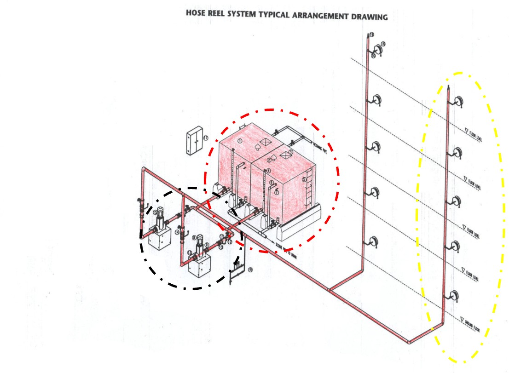Tangki
Muatan minima sebanyak 2275 liter bagi gelung hos pertama. Tambahan sebanyak 1137.5 liter begi setiap gelung kedua sehingga maksimum sebanyak 9100 liter. Tangki ini boleh dibina secara berasingan atau berkongsi dengan tangki sistem pancur basah atau sistem pili bomba bertekanan. Tetapi perlu memasang ’pressure reducing valve (PRV)’.
Tangki perlu mendapat air masuk secara automatik melalui paip sekurang-kurangnya bersaiz 50mm garis pusat dengan kadar 25 liter sesaat. Tangki perlu di cat warna merah atau lilitan warna merah (red band) dan ditulis ’TANGKI AIR SISTEM BANTU MULA’.
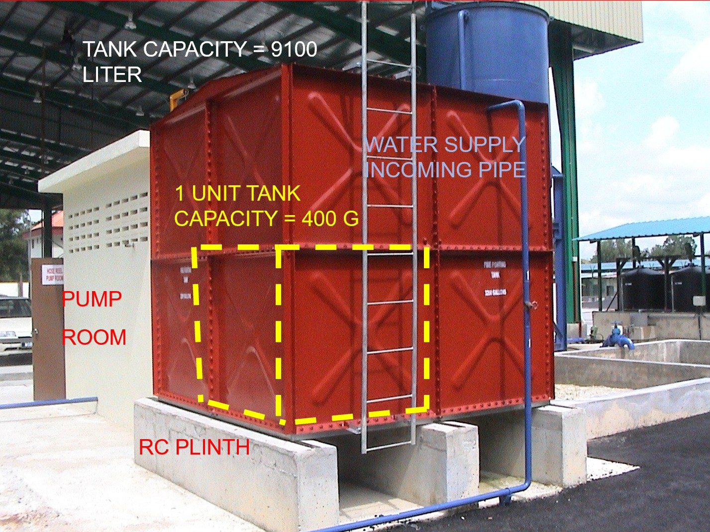Tangki sistem salur bantu mula boleh berkongsi dengan tangki domestik juga tetapi perlu mematuhi beberapa syarat dalam memastikan bekalan air untuk sistem ini sentiasa ada dan mencukupi. Kaedah yang dibenarkan sama ada asingkan kompatmen di dalam tangki atau kedudukan ’outlet’ tangki domestik mestilah berada di atas ’outlet’ sistem salur bantu mula ini.
Bilik Pam
Bilik pam hendaklah diadakan bagi tujuan melindungi pam dari cuaca panas, hujan, banjir atau pun kebakaran. Mesti mempunyai pengudaraan yang baik dan diadakan papan tanda bilik pam tersebut. Pam bagi sistem ini terdiri daripada pam utama (duty) atau pam pendua (standby). Setiap pam hendaklah diberi tanda nama. Bateri bagi enjin diesel hendaklah dari jenis bebas selenggara seperti ’nikel cadmium’.
Pam sistem ini dibenarkan berganding dengan sistem pemasangan tetap lain (tidak perlu ada pam sendiri) sama ada dari sistem pancur basah dan pili bomba bertekanan dengan syarat diadakan injap pengurang tekanan (pressure reducing valve).
Pam Starter Panel
Sebaik-baik kedudukannya hendaklah berdekatan dengan pam supaya mudah untuk menjalankan ujian. Hendaklah disambungkan ke panel utama.
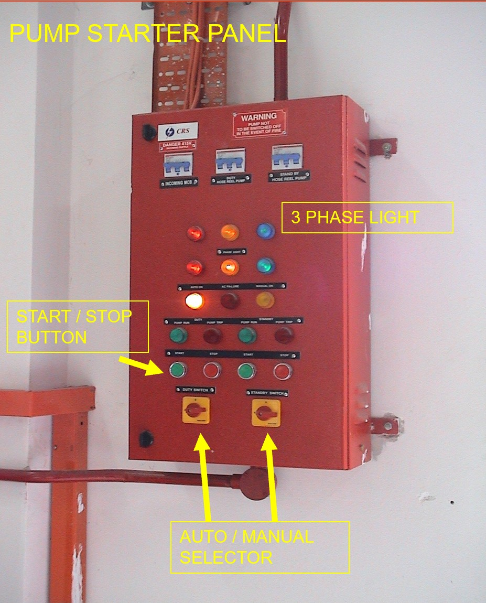Sistem Paip
Paip mestilah dari jenis ’galvanised iron (G.I) kelas C. G.I kelas B dibenarkan hanya untuk pemasangan di atas tanah. Saiz paip utama sekurang-kurangnya 2 inci dan paip ke salu bantu mula bergaris pusat 1 inci. Hos mestilah dari jenis ’double braided’ dan ’non kinked bergaris pusat bahagian dalam 25mm dan Panjang 30 meter. Nozel mestilah dari jenis jet atau kombinasi jet dan spray.
Keperluan undang-undang
Keperluan mengadakan sistem salur bantu mula ini terletak di dalam jadual kesepuluh. Dari segi pemasangan perlu merujuk kepada MS 1489. Merujuk kepada MS 1489:Part1, satu salur bantu mula hendaklah disediakan setiap 800 meter persegi keluasan lantai. Walaubagaimanapun, JBPM telah menetapkan jarak dan diameter sistem ini seperti di bawah.
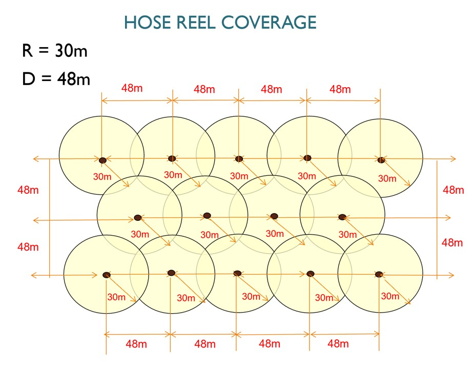Sistem Pemadaman Automatik
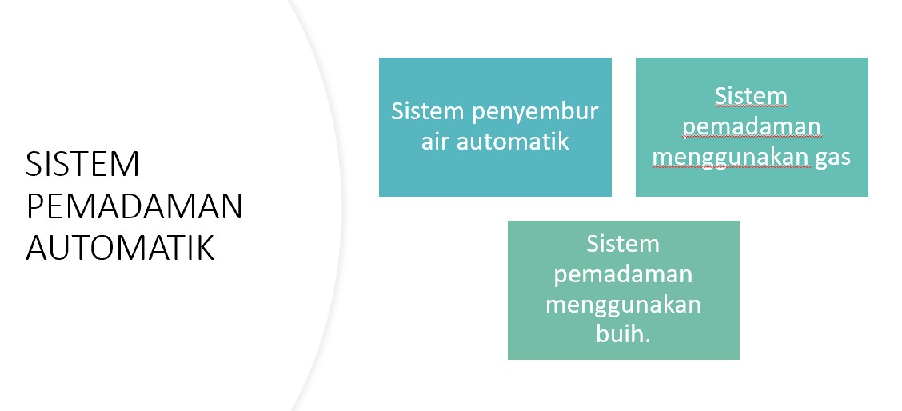Menurut Undang-Undang Kecil Bangunan Seragam 1984 (Pindaan 2021), Sistem Pemadaman Automatik merujuk kepada sistem pemasangan tetap yang direka untuk mengesan, mengawal, atau memadamkan kebakaran secara automatik tanpa campur tangan manusia yang segera.
Sistem ini adalah sebahagian daripada langkah-langkah Perlindungan Kebakaran Aktif yang diwajibkan oleh undang-undang kecil untuk bangunan-bangunan tertentu, terutamanya yang mempunyai risiko kebakaran yang tinggi, ketinggian tertentu, atau diduduki untuk tujuan berbahaya.
Sistem Penyembur Air Automatik
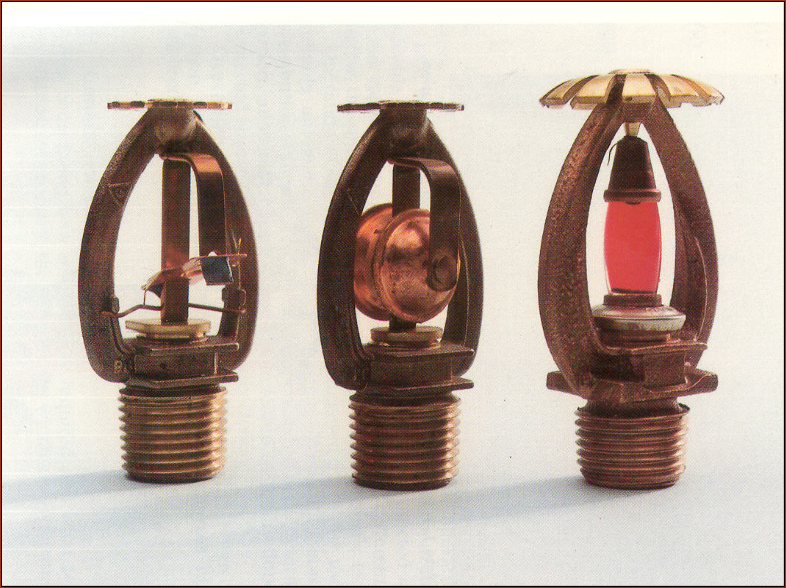Sistem penyembur air automatik merupakan sistem pemasangan tetap yang mempunyai bekalan air sendiri, paip, injap dan tempat pancuran untuk bertindak secara automatik. Sistem ini bertindak dengan cara mengesan, memberi isyarat, mengawal dan memadam kebakaran secara automatik.
Sistem ini beroperasi pada suhu yang ditetapkan. Suhu dipilih mengikut kesesuaian suhu persekitaran kawasan yang dilindungi/ proses produksi/ penggunaan ruang. Hanya penyembur air automatik di kawasan yang terlibat dengan kebakaran sahaja yang akan bertindak.
Terapat beberapa tempat yang boleh dikecualikan untuk memasang sistem ini seperti silo, ruang yang dilindungi oleh sistem yang berfungsi seperti sprinkler (sistem gas, water mist, etc), kawasan di mana semburan air boleh mewujudkan bahaya seperti kilang proses aluminium dan tempat atau bilik yang basah seperti tandas.
Tiga kaedah pemasangan sistem ini termasuklah ’Light Hazard’, ’Ordinary Hazard’ dan ’High Hazard’. Bagi kaedah pemasangan ’Light Hazard’, ianya adalah untuk kegunaan industri yang mempunyai risiko yang rendah dari segi kebakaran dengan bilik atau koridor yang tidak melebihi 126 meter persegi.
Bagi kaedah pemasangan ’Ordinari Hazard’ pula, ianya untuk kegunaan industri yang mempunyai risiko yang tinggi dari segi kebakaran. Terdapat 4 jenis pemasangan iaitu OH Group I, OH Group II, OH Group III dan OH Group III Special.
Bagi pemasangan ‘High Hazard, ianya adalah untuk kegunaan industri yang mempunyai risiko yang luar biasa dari segi kebakaran. Terdiri daripada process risk dan storage risk. Terdapat 4 jenis pemasangan iaitu HH Group I, HH Group II, HH Group III dan HH Group IV.
Jenis-jenis Sprinkler
-
Conventional
- Boleh diletakkan sama ada secara ’upright’ atau ’pendant’
- 50% spray upwards.
- 50% spray downwards.
- Titisan yang banyak dan menembusi kebakaran.
- Percikan air akan membentuk sfera pada bahagian atas dan bawah kepala sprinkler.
-
Jenis Spray
- 80% downwards dan 20% upwards.
- Direkabentuk untuk upright atau pendant tetapi tidak boleh digunakan untuk kedua-duanya.
- Titisan air yang berbentuk ’parabolic discharge’.
-
Ceiling atau Flush
- Sesuai untuk suspended ceilings.
- Sebahagian dari badannya diletakkan di dalam siling.
- Bahagian yang mempunya bulb perlu diletakkan di bahagian bawah.
-
Recessed
Badan sprinkler serta bulb diletakkan terus di dalam ruang siling. -
Concealed
- Keseluruhan disembunyikan tetapi terdapat plat cover di bawah.
- Cover plat akan terkena haba dahulu dan ianya akan jatuh untuk membenarkan haba mengenai bulb untuk memberi semburan.
-
Side Wall
- Direkabentuk untuk diletakkan di tepi dinding.
- Semburan (Spray pattern) akan disasarkan pada sesuatu arah.
- ESFR
- Factory mutual.
- Cepat bertindak.
- Berkeupayaan tinggi.
- Bertindak dari atas.
- Quick Response Sprinkler
Lagi kecil bulb pada kepala sprinkler maka semakin cepat ianya akan mencapai tahap haba maksima.
Komponen-komponen sistem penyembur air automatik ialah:
- Kepala penyembur (sprinkler head).
- Paip (suction pipe)

- Flow switch, butterfly valve dan drain pipe
- Injap kawalan utama
- Set pam (jockey, duty, standby)
- Injap masuk (breeching inlet)
- Tangki air

- Stater panel.
Sistem Pemasangan Tetap Gas
Merupakan satu sistem pemasangan tetap yang diadakan untuk mengesan dan memadam kebakaran dengan menggunakan gas sebagai media pemadaman. Sistem pemasangan tetap gas ialah kaedah pemadaman kebakaran automatik yang menggunakan agen pemadam dalam bentuk gas, bukannya air, buih, atau serbuk. Sistem ini berfungsi dengan memadamkan salah satu unsur dalam "Segi Tiga Api" (Haba, Oksigen, Bahan Api):
- Penghapusan Oksigen: Contohnya, sistem Karbon Dioksida (CO2) atau Gas Inert (seperti IG-55 atau IG-541) berfungsi dengan mengurangkan kepekatan oksigen dalam ruang yang dilindungi sehingga api tidak dapat dikekalkan.
- Penyejukan dan Gangguan Rantai Kimia: Agen pemadam bersih (Clean Agents) seperti HFC-227ea (FM-200) atau FK-5-1-12 (NOVEC 1230) bertindak balas secara kimia dengan api, menyekat tindak balas berantai yang mengekalkan pembakaran.
Sistem gas biasanya diwajibkan oleh Jabatan Bomba dan Penyelamat Malaysia (JBPM), selaras dengan semangat Undang-Undang Kecil 226 dan Undang-Undang Kecil 235 (Sistem pemadam tetap), untuk melindungi kawasan di mana:
- Peralatan Bernilai Tinggi dan Sensitif: Air boleh menyebabkan kerosakan teruk.
- Pusat Data (Data Centers/Server Rooms): Di mana ketidaksinambungan operasi dan kerosakan elektronik perlu dielakkan.
- Bilik Kawalan (Control Rooms) dan Arkib/Perpustakaan (Arkib/Dokumen Berharga).
- Bahaya Elektrik Voltan Tinggi: Kawasan yang melibatkan kebakaran peralatan elektrik.
- Bilik Pengubah (Transformer Rooms), Bilik Suis Voltan Tinggi.
- Bilik Janakuasa (Generator Rooms).
Berdasarkan agen pemadam, terdapat tiga kategori utama yang diiktiraf di Malaysia iaitu:
| Jenis Sistem | Agen Pemadam | Mekanisme Pemadaman | Catatan Utama |
|---|---|---|---|
| Gas Inert | IG-55, IG-541 | Mengurangkan kepekatan Oksigen (Asfiksia) | Selamat digunakan dalam ruang yang diduduki, tetapi memerlukan pelepasan yang lebih lama. |
| Agen Bersih (Clean Agent) | FM-200 (HFC-227ea), NOVEC 1230 (FK-5-1-12) | Gangguan Rantai Kimia (Menyahaktifkan radikal bebas api) | Pemadaman yang pantas, tidak meninggalkan sisa, dan selamat untuk elektronik. |
| Karbon Dioksida (CO2) | Karbon Dioksida | Mengurangkan kepekatan Oksigen | Sangat berbahaya kepada manusia pada kepekatan pemadaman. Penggunaan adalah terhad kepada bilik tanpa penghuni atau memerlukan prosedur keselamatan yang ketat. |
Terdapat 4 teknik pemadaman bagi sistem karbon dioksida iaitu:
- ’total flooding’ – system ini bertindak dengan mendiscajkan gas karbon dioksida ke dalam satu ruang yang terkurung yang mengandungi ’hazard’ yang hendaklah dilindungi dengan cara membanjiri keseluruhan itu dengan gas karbon dioksida. Pemasangan jenis ’total flooding’ sesuai untuk memadam kebakaran jenis permukaan yang melibatkan bahan pepejal, cecair dan gas serta kebakaran jenis dalaman yang melibatkan bahan pepejal (smoldering).
- ’local application’ - Sistem ini bertindak dengan cara mendiscajkan gas karbon dioksioda terus ke atas material yang terbakar seperti komputer atau enjin.
- ’hand hose line’ - Satu jenis sistem yang mengandungi gelung hos dan nozel. Gas karbon dioksida dibekalkan daripada tangki dan dipasangkan dengan paip yang tetap ke gelung hos dan boleh mengandungi beberapa gelung hos pada sistem ini.
- ‘standpipe system & mobile supply’ – satu jenis system pemasangan tetap yang boleh merupakan jenis total flooding, local application atau hand hose line system tetapi tanpa gas karbon dioksida yang disambungkan dengan tetap pada sistem tersebut. Gas karbon dioksida boleh diangkut dari luar dan disambungkan kepada inlet masuk sistem jika perlu.
Terdapat dua rekabentuk sistem karbon dioksida iaitu sistem dengan silinder pandu ( pilot cylinder) dan sistem tanpa silinder pandu. Fungsi utama Silinder Pandu pada sistem pemadaman Karbon Dioksida ialah sebagai unit pemicu (actuator) untuk mengaktifkan pelepasan gas dari bank silinder utama. Secara ringkasnya, silinder pandu adalah komponen penting yang menterjemahkan isyarat pengesanan kebakaran automatik kepada tindakan mekanikal yang diperlukan untuk membuka injap bank silinder utama. Ini memastikan pelepasan gas pemadam yang berkesan dan serentak ke dalam zon kebakaran.
Sistem Pemadaman Menggunakan Buih
Sistem pemadaman menggunakan buih, atau Sistem Pemadam Buih Kebakaran (Fire Foam Suppression System), ialah sejenis sistem pemadaman automatik tetap yang menggunakan buih sebagai agen pemadam api. Sistem ini direka khas untuk memadamkan kebakaran yang melibatkan cecair mudah terbakar, yang dikenali sebagai kebakaran Kelas B (seperti petrol, minyak, pelarut, dan bahan kimia lain).
Tidak seperti sistem air yang menyejukkan, buih memadamkan api melalui tiga mekanisme utama:
- Menyekat Oksigen (Smothering/Blanketing): Buih adalah lapisan selimut tebal dan stabil yang terapung di atas permukaan cecair yang terbakar. Lapisan buih ini menghalang wap bahan api naik dan memotong bekalan oksigen dari udara, memadamkan api.
- Penyejukan (Cooling): Kandungan air di dalam buih membantu menyejukkan permukaan cecair mudah terbakar dan struktur di sekelilingnya, mengurangkan kadar pengeluaran wap bahan api.
- Pengasingan (Separation): Lapisan buih berfungsi sebagai penghalang fizikal, menghalang wap bahan api daripada bercampur dengan udara dan menyekat penyalaan semula (re-ignition).
Berdasarkan UBBL 1984 (Pindaan 2021) dan garis panduan JBPM, sistem buih biasanya diwajibkan untuk:
- Kemudahan Penyimpanan Cecair Mudah Terbakar: Tangki penyimpanan minyak, petrol, atau alkohol yang besar.
- Hangar Pesawat: Digunakan untuk kebakaran melibatkan bahan api pesawat.
- Pelantar Minyak dan Gas: Digunakan di kawasan pemprosesan yang melibatkan hidrokarbon.
- Loji Kimia dan Petrokimia: Kawasan di mana tumpahan cecair mudah terbakar berisiko tinggi berlaku.
- Pemuatan/Pemunggah Jeti dan Stesen Pam: Tempat di mana bahan api dipindahkan.
Sistem buih terdiri daripada beberapa komponen asas yang membolehkan campuran air, pekatan buih, dan udara disebarkan sebagai buih:
- Bekalan Air: Sumber air yang mencukupi untuk bercampur dengan pekatan buih.
- Pekatan Buih (Foam Concentrate): Cecair pekat yang disimpan di dalam tangki dan menjadi asas buih. Jenis buih yang biasa digunakan ialah Aqueous Film-Forming Foam (AFFF) atau Alcohol-Resistant Foam (AR-AFFF).
- Peranti Dos (Proportioning Device): Alat mekanikal (seperti In-line Inductor atau Bladder Tank) yang mencampurkan pekatan buih dengan air pada nisbah yang tepat (biasanya 1%, 3%, atau 6%).
- Peranti Pelepasan Buih (Foam Discharge Devices):
- Penyembur Buih (Foam Sprinklers): Mirip penyembur air, tetapi direka untuk buih.
- Monitor Buih (Foam Monitors): Untuk melepaskan buih dalam kuantiti yang besar dari jarak jauh.
- Penjana Buih Volum Tinggi (High-Expansion Foam Generators): Digunakan untuk mengisi ruang tertutup (seperti hangar) dengan buih ringan yang cepat.
Secara ringkas, sistem pemadaman buih adalah pertahanan yang paling berkesan terhadap risiko kebakaran yang melibatkan bahan api cecair mudah terbakar.
Sistem Memberi Amaran
Sistem memberi amaran, atau lebih dikenali sebagai Sistem Penggera Kebakaran (Fire Alarm System), ialah satu set peranti dan peralatan yang direka untuk mengesan kehadiran kebakaran pada peringkat awal dan memberi amaran kepada penghuni bangunan dan pihak berkuasa yang berkaitan. Menurut UBBL 1984 (Pindaan 2021), sistem ini adalah komponen penting dalam langkah-langkah Perlindungan Kebakaran Aktif, bertujuan untuk memastikan keselamatan nyawa dengan memberi masa yang mencukupi untuk pemindahan.
Sistem memberi amaran yang lengkap terdiri daripada tiga komponen asas yang berfungsi secara bersepadu:
- Pengesanan (Detection)
Komponen ini bertanggungjawab mengesan tanda-tanda awal kebakaran. Peranti pengesan utama termasuk:- Pengesan Asap (Smoke Detectors): Mengesan zarah asap di udara.
- Jenis: Ionisasi (untuk asap pantas, api terbuka) atau Fotoelektrik (untuk asap perlahan, api membara).
- Pengesan Haba (Heat Detectors): Mengesan kenaikan suhu yang pantas atau suhu ambang yang telah ditetapkan.
- Pengesan Api (Flame Detectors): Mengesan sinaran ultraungu (UV) atau inframerah (IR) yang dihasilkan oleh api.
- Titik Panggilan Manual (Manual Call Points / Break Glass Points): Kotak amaran yang membolehkan sesiapa sahaja mencetuskan penggera secara manual setelah mengesan kebakaran.
- Pengesan Asap (Smoke Detectors): Mengesan zarah asap di udara.
- Kawalan (Control)
Pusat otak bagi keseluruhan sistem:- Panel Kawalan Penggera Kebakaran (Fire Alarm Control Panel - FACP): Peranti utama yang menerima isyarat daripada pengesan, menentukan zon kebakaran, mengaktifkan peranti amaran, dan memantau integriti sistem (seperti wayar atau bekalan kuasa).
- Bekalan Kuasa: FACP mesti mempunyai bekalan kuasa utama dan bateri sandaran untuk memastikan sistem berfungsi semasa gangguan elektrik.
- Pemberian Amaran (Notification)
Komponen yang memberi amaran kepada penghuni apabila FACP menerima isyarat kebakaran:- Penggera Bunyi (Audible Alarms): Loceng, siren, atau hon yang mengeluarkan bunyi nyaring.
- Penggera Visual (Visual Alarms): Lampu strobe (berkelip) yang penting untuk penghuni yang mempunyai masalah pendengaran.
- Sistem Pengumuman Awam (Public Address - PA System): Sistem komunikasi suara yang membolehkan pengurus bangunan atau kakitangan kecemasan memberikan arahan pemindahan yang jelas.
Kesimpulannya ialah sistem memberi amaran adalah garis pertahanan pertama yang penting dalam keselamatan kebakaran, memastikan pengesanan cepat dan pemindahan yang teratur.